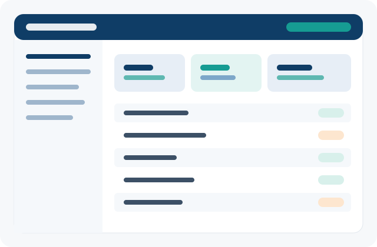
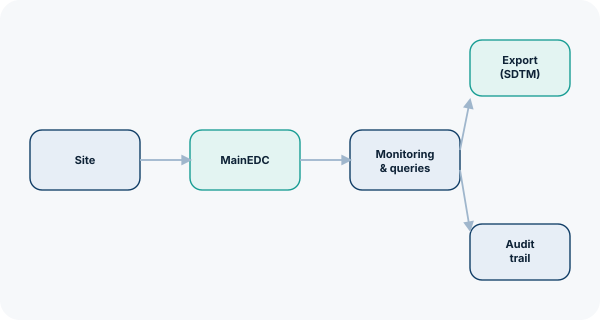

Platform
MainEDC: one validated platform from study build to export-ready data
A configurable EDC and IRT system used across Phase I–IV studies, designed so data managers, monitors and site staff can each work the way their role requires.
Built for the way studies are actually run
MainEDC is the core electronic data capture platform from Data Management 365. It's used to design eCRFs, manage user roles, enter and clean data, and produce export-ready datasets — without each study team building its own infrastructure.
The platform runs as a private-cloud SaaS deployment with an attested hosting infrastructure, and is built to satisfy 21 CFR Part 11, ICH GCP, GAMP 5, HIPAA and GDPR requirements. Every change to study data is recorded in an immutable audit trail.
- Drag-and-drop eCRF builder (MainEDC WEB Builder)
- Electronic signature and LIMS integration
- AI-assisted coding against MedDRA, WHODrug, LOINC and ATC dictionaries
- Query management, monitoring and adjudication workflows
- Role-based access and automated notifications
- Proven on databases with 120,000+ patients in a single study

Modules
Add only what the study needs
EDC & eCRF builder
Configurable forms, edit-checks and validation rules built without code by the study team.
IWRS / IRT
Block and stratified randomization, plus drug-supply management, integrated with the study database.
eConsent, ePRO, eCOA
Electronic informed consent and patient/clinician-reported outcome collection in the same workflow as clinical data.
AI Coder
AI-assisted medical coding intended to automate a large share of routine coding work, with human review built in. [Confirm current automation rate before publishing externally]
RBM — risk-based monitoring
Directs source data verification and monitoring visits toward the sites and fields with the highest risk.
Storage
Long-term validated storage for study documentation, with version control and access logging.
Audit trail
Every record change is logged in an immutable trail, supporting inspection and reconstruction of study history.
Reporting & export
SDTM-ready exports and configurable reporting for statisticians and regulatory submissions.
Validation & user roles
GAMP 5-aligned system validation, with granular, role-based user permissions. [Confirm whether MainEDC supports custom role definitions per study]
Workflow
From study build to a clean, exportable dataset
-
01
Study setup
Build eCRFs and edit-checks with the WEB Builder; configure validation rules.
-
02
Site & user management
Onboard sites, assign roles and configure notifications.
-
03
Data entry
Online or offline entry, including mobile data capture for decentralized studies.
-
04
Monitoring & data cleaning
Risk-based monitoring, queries and adjudication keep the database clean.
-
05
Export & reporting
Coded, SDTM-ready exports for analysis, reporting and submission.

Data stays traceable at every step
Because every module — EDC, IRT, coding and export — runs on the same underlying database, study teams avoid the reconciliation work that comes from stitching together separate point solutions.
Review compliance & security →